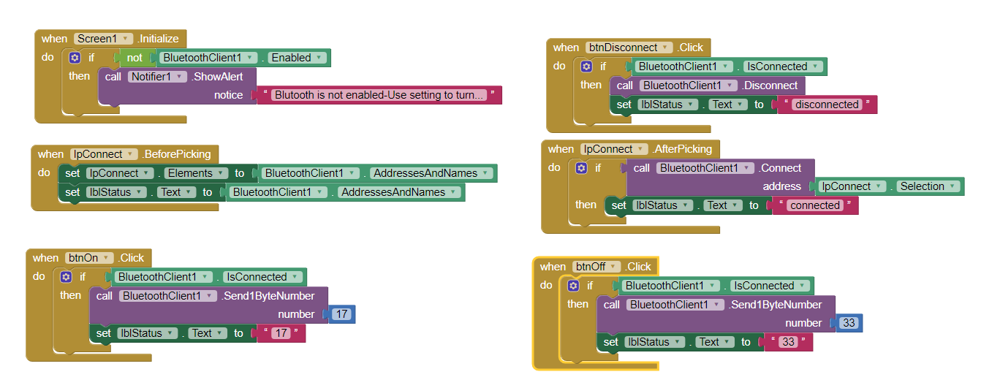
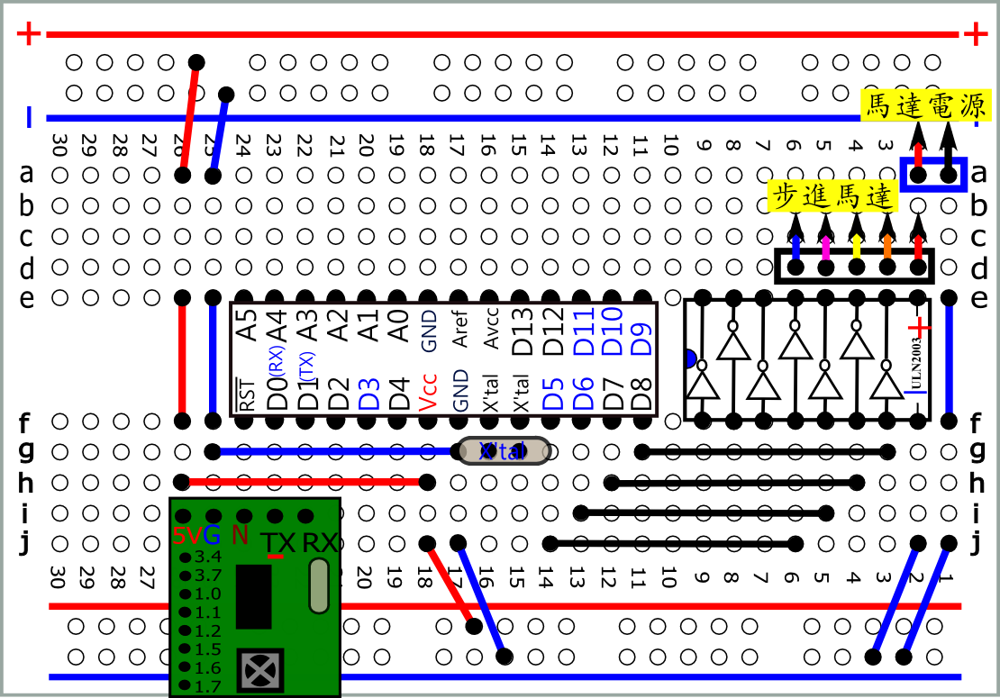

 bt_ir_SM.apk bt_ir_SM.aia |
 |
| A5接地: ir A5接+:BT 需重新上電 |
| int
condf; int irin; int pin[4]={5,6,7,8}; int out[4][4]={{1,1,0,0},{0,1,1,0},{0,0,1,1},{1,0,0,1}}; void stepM(int steps,int dt) { for(int k=0;k<steps;k++) { for (int i=0;i<4;i++) { for(int j=0;j<4;j++) { digitalWrite(pin[j],out[i][j]); } delay(dt); } } } void stepMrev(int steps,int dt) { for(int k=0;k<steps;k++) { for (int i=3;i>=0;i--) { for(int j=0;j<4;j++) { digitalWrite(pin[j],out[i][j]); } delay(dt); } } } void setup() { condf=digitalRead(A5); if(condf==HIGH) Serial.begin(2400); //ir else Serial.begin(115200);//BT for(int i=0;i<4;i++) pinMode( pin[i] , OUTPUT); } void loop() { if (Serial.available() > 0) { irin = Serial.read(); if (irin==0x11) stepM(128,5); //one turn 2048/4=512 if (irin==0x21) stepMrev(128,5); //rev } } |